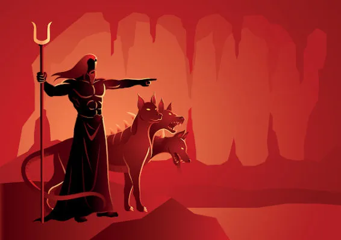
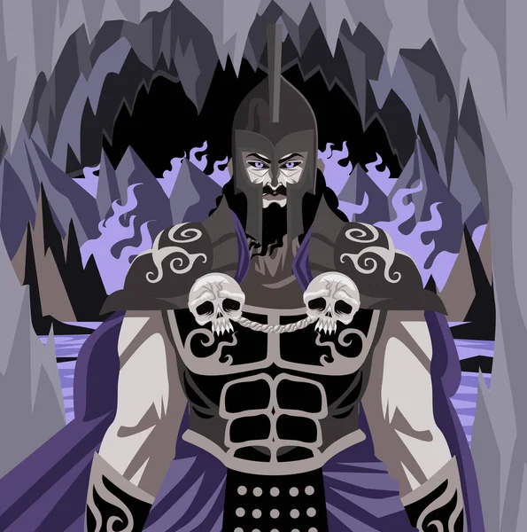
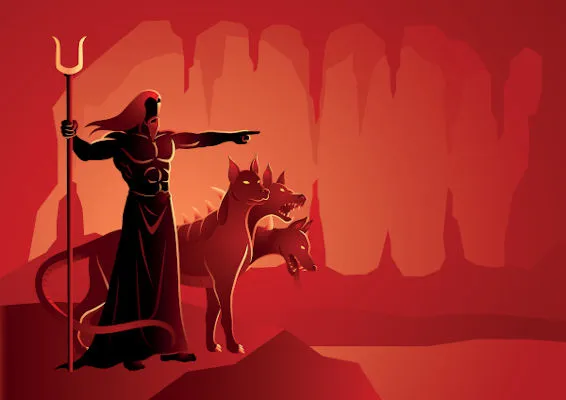
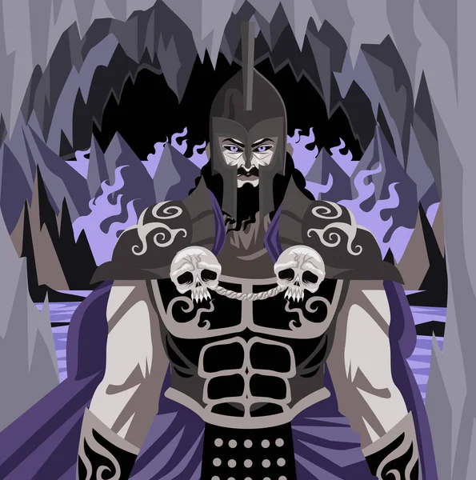

HADES
sobre
imagens
inspirações

Minha História
Hades é o filho de Cronos, rei dos Titãs, e Reia.
Ele possui mais quatro irmãos: Poseidon,
Zeus,
Deméter, Héstia e Hera.
Cronos, o seu pai e o mais novo dos titãs,
devorava seus filhos ao nascerem, com receio de
ser
destronado.
Com a sua vitória sob Cronos, ele teve o direito
de governar o submundo. Já seus irmãos,
Zeus e
Poseidon,
ficaram com a posse do céu e do mar, respectivamente.
Assim, ele era o único que não morava no Monte Olimpo,
uma vez que residia em um palácio
debaixo da
Terra. seu símbolo é um capacete
confeccionado por Hefesto cujo adorno o tornava invisível.
IMAGENS
.webp) 




.webp)
INSPIRAÇÕES

Por sua grande popularidade, Hades acaba sendo alvo de grandes
inspirações no nosso mundo, assim
como jogos de videogames,
com inspirações, personagens criados, e tantas outras coisas.
Podemos citar o personagem Hades de uma animação japonesa
chamada: Cavaleiros do Zodíco, na qual
o
mesmo também
controla o submundo, ou o personagem da Disney.
Hades - Cavaleiros do Zodíaco
Hades - Disney
Hades - Jogo de Videogame
RELAÇÕES
Cronus (Pai) e Reia (Mãe)
Poseidon (irmão), Zeus (irmão),
Deméter (irmã), Héstia (irmã)
e Hera (irmã).
Perséfone.
Gustavo Ramos
Olá, Eu sou o Gustavo. Tenho 15 anos, nasci e cresci em SP,
Entrei no IF por causa da minha
mãe,
que
queria que eu fizesse o curso técnico junto com o EM,
além de n precisar pagar mais escola.
Escolhi informática apenas pelo importante fator
de eu provavelmente não me dar bem em
mecatrônica.
Adoro esportes,
Futebol, Basquete, Futebol Americano, e mais alguns outros,
amo assistir
filmes,
séries, jogar videogame, ler livros,
mas também adoro tocar violão, são a maioria dos meus
passa
tempos.
Adoro essa escola por tudo que ela me proporcionou, me proporcionou
conhecer pessoas
maravilhosas,
incríveis e que eu quero levar pra vida,
pessoas em específico q me fizeram ser mais
feliz.
É realmente
muito estressante essa escola (principalmente em fim de bimestres kkkkk),
mas eu amo essa
escola,
@gusrams
(11)99865-0532